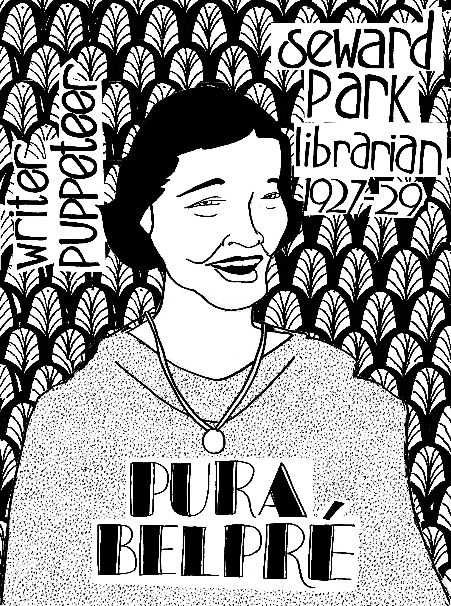
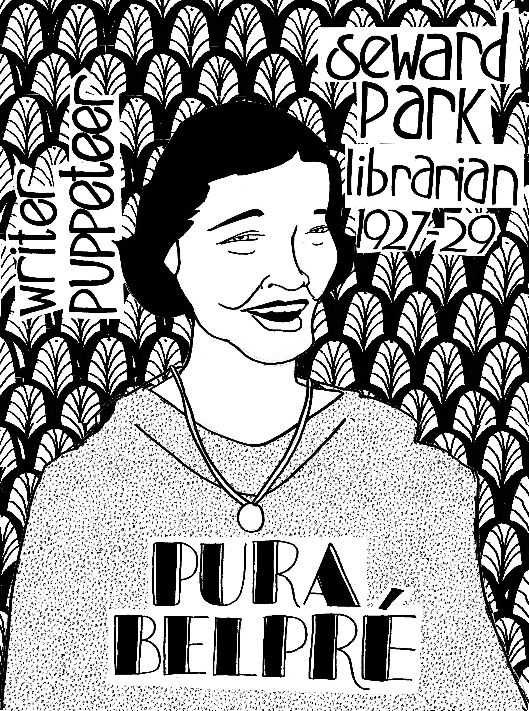

Posters for the Seward Park branch of the New York Public Library
 


I did these series of prints for the third floor of the Seward Park branch of the New York Public Library. Nella Larsen is an author of the Harlem Renaissance know for writing "Quciksand" and "Passing." Pura Belpre was an author, puppeteer, and storyteller who was the first Puerto Rican librarian in New York City. Both Nella and (especially) Pura were know for working in the Countee Cullen branch (then known as the 135th Street branch) *but* most people are unaware of that fact that they got their start at Seward Park.
Bella Spewack who wrote "Kiss Me Kate" with her husband, Samuel, frequented the Seward Park branch when she was a child, as documented in her memoir, "Streets: A Memoir of the Lower East Side". Isaac Bashevis singer, author, was said to hanve frequented the branch in the 1950s. While we're at it, Trotsky is supposed to have visited the branch while in the States, but I'm unable to confirm this aside from the odd anecdote...
All posters are currently hanging in the branch.